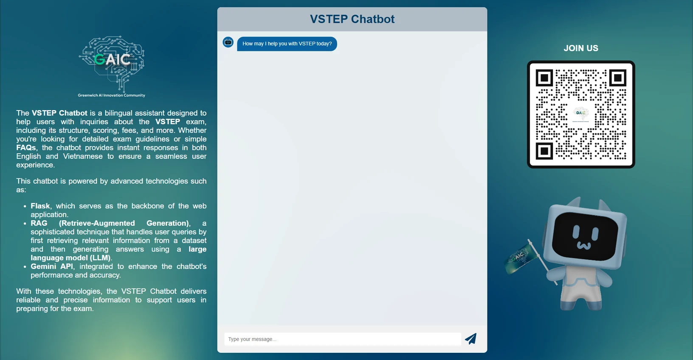

Club’s Week · September 2024
VSTEP Q&A Bot.
A place to ask exam questions in two languages.
I built this browser-based assistant for Club’s Week. Students could type a question about the Vietnamese Standardized Test of English Proficiency in Vietnamese or English.
- Platform
- Browser-based chat
- My work
- JavaScript interface and Flask integration with substantial AI-assisted code generation
Chat interface
Ask in the language you use.
Students can send a question with Enter or the send button. Their message appears immediately. A typing indicator stays on screen while a reply is being prepared, and the conversation scrolls to the newest message.

Answer lookup
From an exam FAQ to a reply.
At startup, Flask loads the Excel workbook and builds a separate TF–IDF index for each language. Both sheets contain 30 questions. All 30 English rows and 25 Vietnamese rows have an answer.
Each request sends one question. Gemini receives that question and the selected FAQ answer, with instructions to stay on VSTEP topics and reply in the detected language.
- Send
Question to Flask
The browser posts the typed question to
/query/and shows a typing indicator. - Route
Greeting or FAQ
Messages containing recognized greetings such as “hello” or “xin chào” get a canned reply. Other messages go to the FAQ lookup.
- Match
Closest question
A check for Vietnamese characters selects the sheet. The bot compares TF–IDF scores by cosine similarity and takes the top result.
- Reply
Gemini response
The matched answer and original question become the model context. The reply appears in the chat.
The character check can send unaccented Vietnamese to the English sheet. The lookup always takes the top row, even if the match is weak or its answer cell is blank.
Workbook example
What goes into a reply?
This example uses the English sheet and the bot’s matching logic. The selected answer is the workbook text passed to Gemini.
- Student question
- What does the acronym VSTEP stand for?
- Matched FAQ question
- What does VSTEP stand for?
- Matched workbook answer
- VSTEP stands for Vietnamese Standardized Test of English Proficiency.